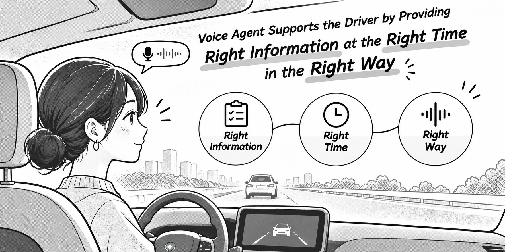
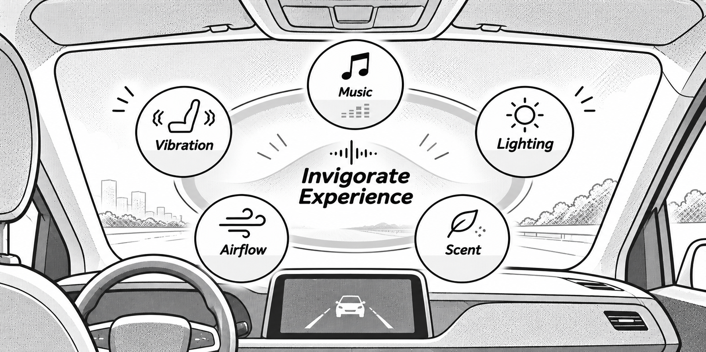
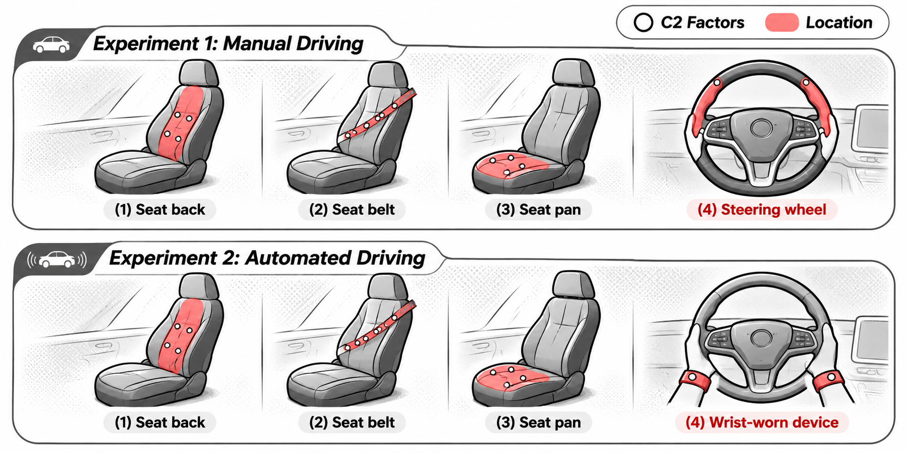
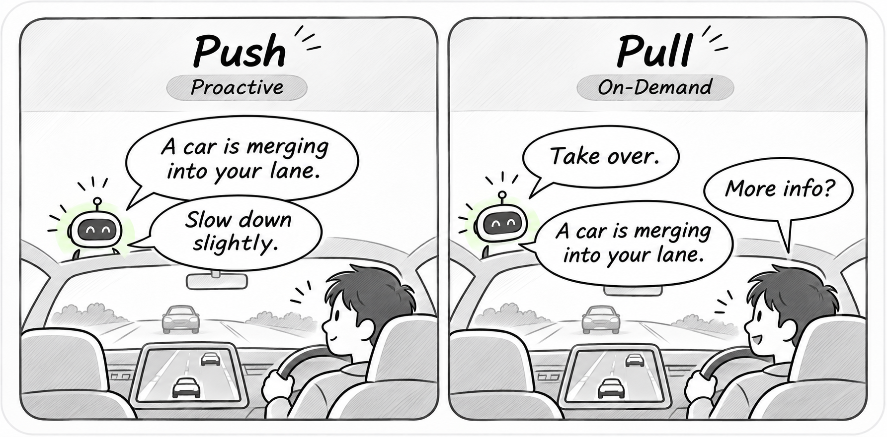
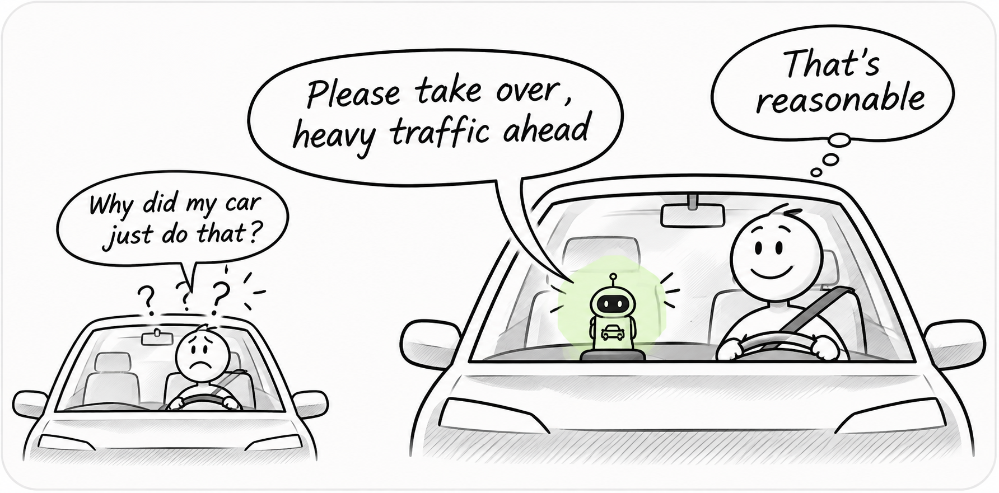
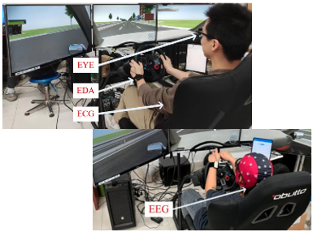
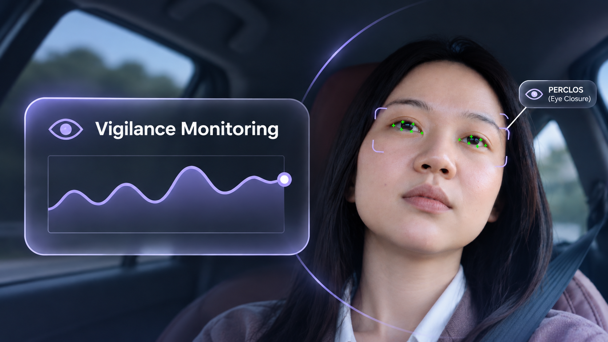
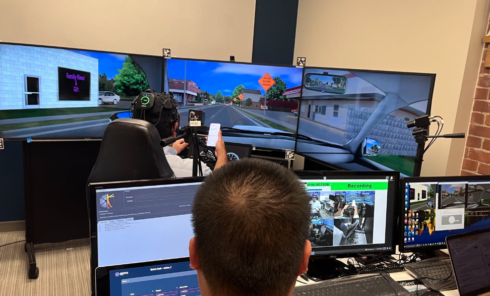
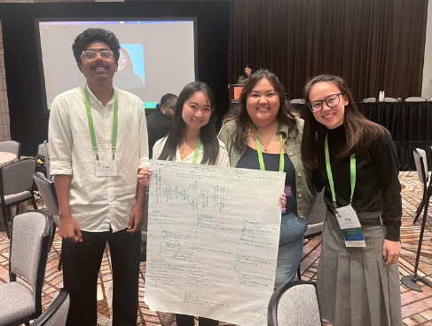
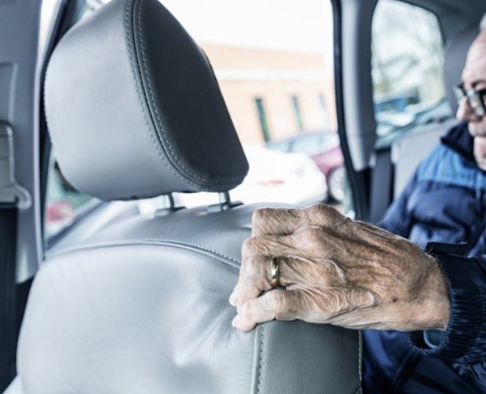

Ph.D. dissertation research
Context-Aware Communication for Automated Driving
Data collection completed · Analysis in progress
Case studies on how people interact with automated vehicles, AI assistants, and other safety-critical systems.

Ph.D. dissertation research
Data collection completed · Analysis in progress

Purdue University × Ford Motor Company
Conducted simulator-based and on-road studies to evaluate whether the Invigorate Experience can enhance driver vigilance and emotional well-being.

Purdue University × ZF Group
Two simulator studies with 40 drivers tested how vibration placement and strength shape alert responses in manual driving and Level 3 takeovers.

In-vehicle Voice Agent
Tested how proactive and on-demand voice explanations and information reliability shape the driver experience in automated vehicles.

In-vehicle Voice Agent
Tested how the amount and reliability of information affect driver trust, workload, situation awareness, and takeover performance.

Driver State Monitoring · Multimodal Sensing
Evaluating which sensors and signal features can help estimate trust in automated driving.

Driver State Monitoring · Multimodal Sensing
Developed a PERCLOS-based driver vigilance monitoring system and evaluated its detection outcomes against traditional assessments.

Work zone safety
Comparing systems that can reduce flaggers’ exposure to traffic while maintaining work zone traffic control.
Incident review and root cause analysis
Using incident reports to identify sources of error during commissioning and propose ways to reduce them.

Personas and usability testing
Designing usability tests for a home assistant with voice and visual interfaces.

Literature review
Reviewing a decade of research on factors that shape older adults’ acceptance of automated vehicles.